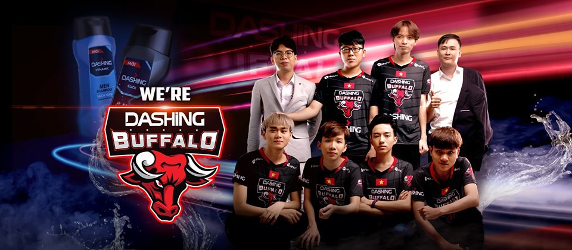
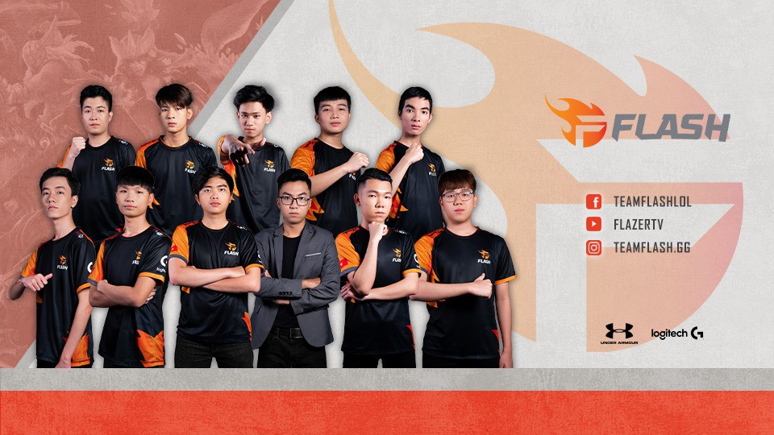

Người hâm mộ Esports đều biết để gây dựng và duy trì một đội tuyển game là vô cùng khó khăn và tiêu tốn rất nhiều tiền của. Từ việc xây dựng đội hình, cơ sở vật chất cho đến những khoản lương cho tuyển thủ đôi khi lên đến 9 con số mỗi tháng. Tuy nhiên với sự đầu tư lớn như thế thì thành quả thu được cũng vô cùng ngọt ngào với những chiến thắng, những danh hiệu và đưa "tiếng thơm" vươn ra khu vực cũng như thế giới. Ngoài những tuyển thủ tài năng tham gia trực tiếp "trên chiến trường" thì đằng sau đó là những người đóng vai trò hậu cần giúp cho đội tuyển phát triển và góp phần tạo điều kiện nuôi dưỡng những tài năng cho Esports Việt Nam. Vậy đằng sau những đội tuyển hàng đầu VCS hiện nay là những nhà tài trợ khủng như thế nào?
Dashimg BuffaloTrước khi vào giai đoạn mùa hè của VCS 2019, nhà đương kim vô địch đã tìm được nhà tài trợ mới cho mình là thương hiệu dầu gội Dashing. Thuộc tập đoàn hóa mỹ phẩm và sản phẩm tiêu dùng WIPRO UNZA với lịch sử hơn 20 năm phát triển, đây cũng là nhãn hàng thân thuộc với người tiêu dùng tại Việt Nam như dầu gội Romano, sữa tắm Enchanteur hay dòng mỹ phẩm Bio Essence. Mới đây nhất thương hiệu giày dép hàng đầu Việt Nam Bitis Hunter cũng đã hợp tác cùng Dashing Buffalo với sự hỗ trợ cho đội tuyển này về trang phục thi đấu.
Tiền thân là Sky Gaming Daklak được thành lập bởi anh Trần Nhật Tiến – Một người có niềm đam mê lớn với Esports.
Anh luôn mong muốn đội tuyển trẻ của mình không những có thành tích tốt mà còn có môi trường luyện tập và sinh hoạt
với chất lượng cao. Với thành tích hạng 3 tại VCSA mùa xuân 2019 là một kết quả bất ngờ với một đội tuyển
"chân ướt chân ráo" đi lên từ giải hạng B giúp cho SGD nhận được nhiều sự chú ý từ các nhà tài trợ và đối tác
trong và ngoài nước. Một trong những đối tác đó là tổ chức Esports hàng đầu Singapore – Team Flash.
Ngoài Team Flash là nhà tài trợ chính, đội tuyển này còn có sự hỗ trợ về gaming gear từ Logitech và Under Armour
tài trợ trang phục thi đấu.

GAM Esports
Cái tên GIGABYTE Marines (GAM) bắt nguồn từ nhà tài trợ chính của đội tuyển vào năm 2017 GIGABYTE cùng nhà tài trợ khác là nền tảng stream game lớn nhất thế giới - Twitch. Tuy nhiên hiện tại GIGABYTE lẫn Twitch không còn là nhà tài trợ của GAM nữa. Nhà tài trợ chính của GAM hiện tại là platform influencer YUP.GG. Đây là nền tảng quản lý và cung cấp người ảnh hưởng và nhà sáng tạo nội dung trong mảng game và esports lớn nhất tại thị trường Đông Nam Á.